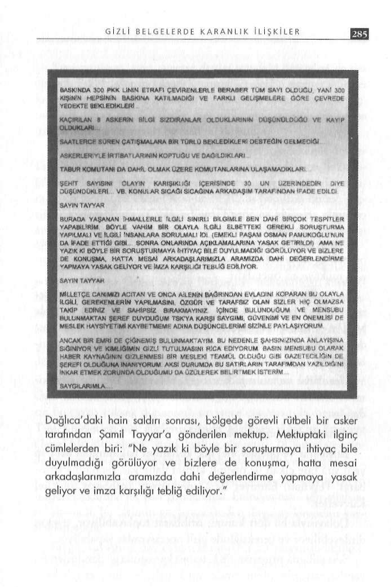

yacağım, sonuna kadar savaşacağım" dedi. Gerçek sorumluların hesap vermediğini düşünüyor.
Albay bana "konuşma" dedi
Diyor ki; "Benim kardeşime ilk kurşunu, teslim olmalarına karşı çıktığı askerlerden biri dizinin altına sıkarak atmıştır. Helikopterle ilk kurtarılan ise operasyon bitene kadar mevzisinde yatan üsteğmen (Çağdaş Cücünoğlu) olmuş."
İnanılacak gibi değil. "Nasıl olur?" diye sordum. Devam etti:
"Bunların hepsini şehit kardeşimin kahraman silah arkadaşlarından dinledim. Ama kimseyi konuşturmuyorlar. Geçenlerde Genelkurmay'a gittim, orada bir albay bana 'Çeneni sıkı tut, bu konuları konuşma' dedi."
Şehit ikizi, kardeşinin cebinden çıkan mevzii planından da söz etti. O plana göre; çatışmanın yaşandığı Keri Tepesi'nde keskin nişancılar tarafından MG3 kullanılan .3 mevzii var. İlkinde Tarık Emeket ile Vedat Kutluca, ikincisinde Cüneyd Ömür ile Mehmet Bayar, üçüncüsünde ise İrfan Beyaz ile İlhami Demir görevli.
İlk mevzideki iki asker şehit düştü, üçüncü mevzideki iki asker ise PKK'ya teslim oldu. Diğer erler ise yaralı olarak çatışmadan kurtuldu. Haklarında dava açılan erlerden Fuat Başoda telsiz dinlemede görevli, Mehmet Şenkul da uçaksavar (HK-LAW-COMSÍS) kullanıcısı.
Dağlıca'da şehit düşen 12 askerimizle ilgili otopsi raporlarım da inceledim. Bir kısmı, gözünden ve ensesinden vurulmuş. Bu durum, teröristlerin nasıl bir teknolojik altyapıya ve eğitime sahip olduklarını göstermesi bakımından dikkat çekici.
Bir ara çok tartışılan, Amerika'nın 5 bin civarında peşmer-geyle birlikte bir grup PKK'lıyı eğitmek üzere Guam Adası'na götürdüğü iddiası yabana atılmamalıdır.
*
